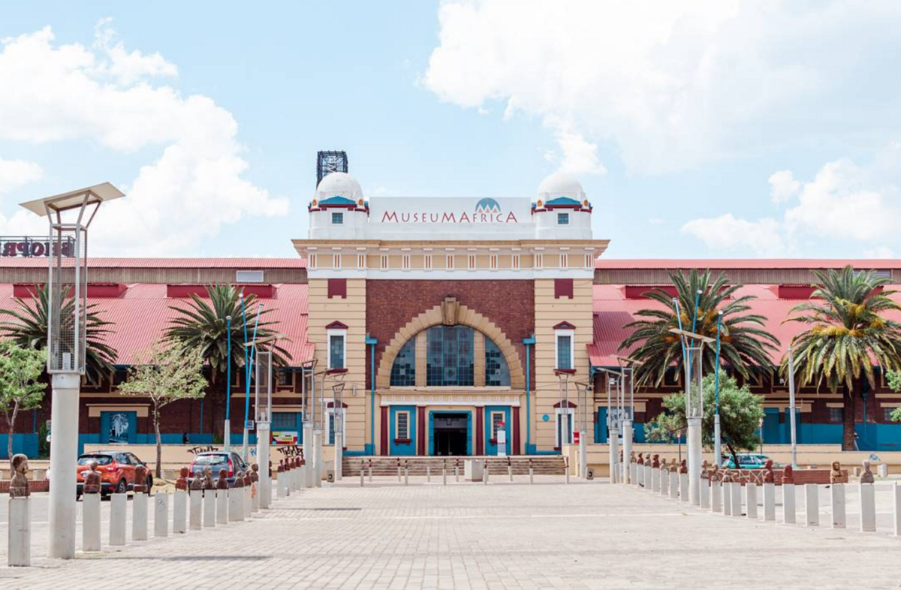

Which City?

Foreign Language
I would like to learn spanish, because it is one of the most spoken language in the world, and it is probably the 3rd world most spoken language. It is also easy to learn it for english speakers.
| Spanish | English |
|---|---|
| hola, cómo estás | Hello, How are you |
| de dónde eres | Where are you from |
| cuántos años tiene | How old are you |
Favourite Subjects
I have a Bachelor of science degree in Environmental Scienes from the the University of KwaZulu-Natal and here are my three favourates subjects at 4IR Accenture as follows:
Agile Rapid Skills Acquisition
Rapid Skill Acquisition is an increasingly popular used to describe the ability to learn or acquire a skill quickly in both the physical and digital realms. Agile learning breaks down the learning process into manageable blocks, providing valuable feedback after each module and fostering flexibility, efficiency, and improved communication.

Engeering Business Systems For 4IR
The Fourth Industrial Revolution (4IR) delivers various tools in the form of automation and systems, proving to be both another challenge and an opportunity for contemporary business. Implementation of 4IR proves to be a multi-dimensional challenge, including skills limitations, resources constraints, time challenges, design knowledge, business readiness, implementation constraints.
Full stack web development for 4IR
Learn practical, job-ready web developer skills to start your professional developer career. Learn HTML, CSS, JavaScript, React, jQuery, VueJs and NodeJs. In the trend of IT advancement, full stack development is one of the optimal solutions that many businesses choose to improve their projects and acquire benefits of web applications development.

Historic Places in Johannesburg
Museum Africa
Museum Africa has to be one of the most beautiful buildings in the CBD. And not only is it beautiful, it’s also home to a number of cultural, historic, artistic exhibits that have been sourced from across the country.
Apartheid Museum
The Apartheid Museum holds the damning evidence of the darkest era in our history. If you’re looking to understand and experience what it was really like to be a person of colour during that time, a visit to the Apartheid Museum is a must.

Mandela House
Mandela House strives to be a world-class visitor attraction and a leading centre for the preservation, presentation, and research of the historical heritage and Mandela Family legacy.